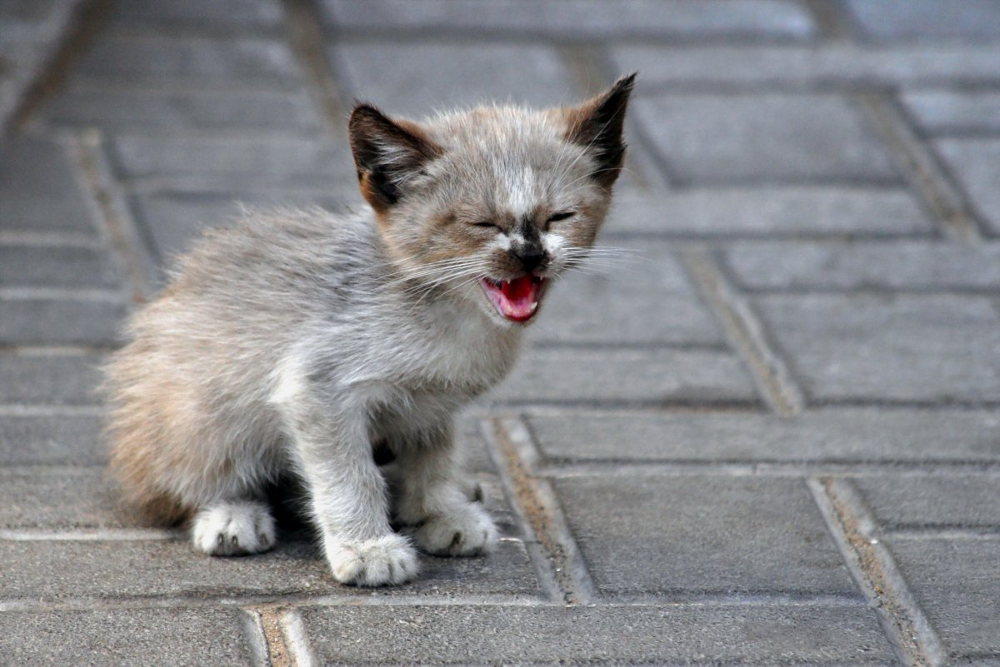

|
| |||
|
Мемы про котов
|
||||

|
|
| |||
|
Мемы про котов
|
||||

Кот на улице живет в постоянном стрессе. Неудивительно, если он не даст вам себя поймать и шипит. Аккуратнее, даже маленький котенок может быть опасен и напуган. Кота лучше завернуть во что-то теплое, вроде пледа или шапки, или поместить в переноску.
Обычно котов с улицы тут же моют шампунем от блох, однако делать этого нельзя. Скорее всего, у уличного кота будет лишай, и если его помыть, очаги заражения распространятся по всему телу. Вот тогда лечить будет гораздо сложнее. К тому же шампунь достаточно токсичен, а для ослабленного кота или котенка это может быть опасно.
Если блох так много, что кот мучается, используйте спрей или капли. Если это котенок, обязательно просите спрей для котят, у него будет специальная дозировка. Если в целом котенок чувствует себя хорошо и не чешется каждую минуту, дождитесь назначения ветеринара.
Даже если внешне котенок здоров, он может быть заражен опасными инфекциями. Чаще всего это дерматофитозы — лишаи. Ими может заразиться сам человек, дети и другие домашние животные. А лечить лишай долго и муторно. У уличных животных очень распространены паразитарные заболевания: как паразиты кожи, так и внутренние паразиты — глисты. Противопаразитарные обработки для животных с неизвестной судьбой обязательны. Какие препараты и в какой последовательности надо применить, решает ветврач после клинического осмотра и взвешивания. Определить все это на глаз сложно, поэтому и надо советоваться с врачом.
Бездомные животные могут быть больны инфекциями, и в некоторых случаях смертельно опасными для других животных. Если дома у вас уже есть животные, необследованная кошка или собака — большой риск для них. Если вы взяли котенка с улицы, первое время его надо держать в карантине. Подойдет просто отдельная комната в квартире или балкон, если на улице тепло. Важно, чтобы животные никак не пересекались друг с другом. Не должно быть общего пространства, мисок, лежанок и игрушек. Инкубационный период большинства инфекций длится две недели. Если спустя это время с новым котом все будет в порядке, можно выпускать из карантина. Важно, чтобы местные животные были привиты от инфекций, обработаны от паразитов кожи и глистов.
Вакцинация — это обязанность для каждого порядочного хозяина. Если вы подобрали котенка с улицы, вакцина не вылечит уже имеющиеся инфекции, но в будущем вакцинированное животное переносит заболевания легче. Это важно для уличных котов, которые часто снова убегают на улицу, а потом возвращаются, нагулявшись по подвалам. Вакцинировать "подобрашку" сразу нельзя. Прививки делают только полностью здоровым животным. Сначала коту надо вывести блох и дать глистогонное. Спустя десять дней после этого кота можно вакцинировать, если со здоровьем все в порядке.
Уличному коту, а особенно котенку, нужно специальное питание. Желудок у них ослаблен от недоедания и плохой пищи, от паразитов. Проще всего дать корм для маленьких котят. Это сбалансированное питание с точной дозировкой. Подойдут нежирные сливки, творог, ряженка. Не кормите кота едой со стола и рыбными консервами. Привыкший голодать кот съест все, что ему дают, однако потом начнутся проблемы: запор, диарея, рвота, потеря аппетита. Лучше всего, если диету назначит врач.
Источник:Ветсеть